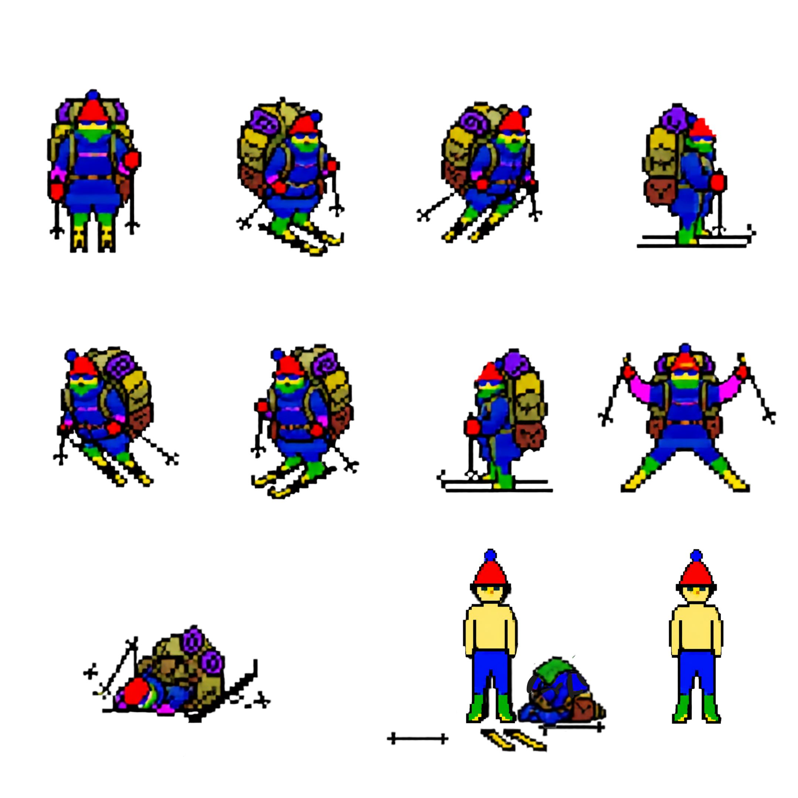

BeFree Sprite Tuner
Align Lylia's sprite page against the original SkiFree skier states.
Auto-saved locally
Open Game
Copy JSON
Download JSON
State
Previous
Next
Ready
Overlay Alignment
Drag the new crop over the original sprite.
New Sprite Crop
Move or resize the crop box on the sprite page.
Sheet -
Sheet +
Center Crop
